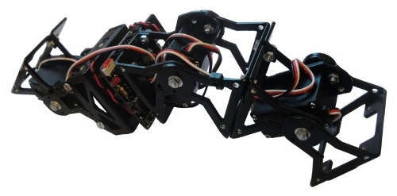
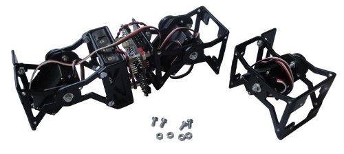

Ya están publicadas las instrucciones del montaje del robot Cube3. Es un robot con topología de una dimensión del grupo cabeceo-cabeceo con 3 módulos, que se puede mover hacia adelante y atrás.

Su montaje es muy sencillo si ya se tiene a Minicube-I montado y un módulo MY1 terminado. Simplemente hay que atornillarlos, conectar el servo a la Skycube y opcionalmente usar bridas para colocar los cables.